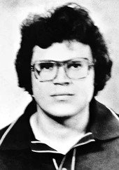
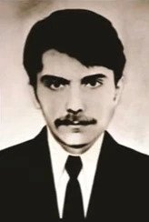
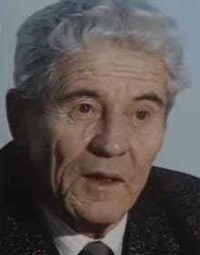
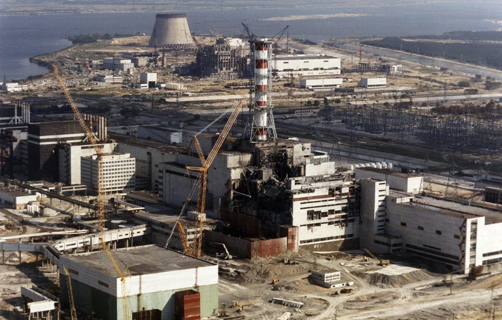

History Of Chernobyl
Chernobyl, a city located in northern Ukraine, is famous for the nuclear disaster that occurred at the Chernobyl Nuclear Power Plant on April 26, 1986. The disaster is known as the worst nuclear accident in history, causing severe and long-lasting effects on the environment and human health.
During a routine test of the power plant's fourth reactor, a combination of design flaws and operator error caused the reactor's core to overheat, leading to a steam explosion and a fire that lasted for several days. The fire released radioactive particles into the air, which spread over large areas of Ukraine, Belarus, and Russia.
The initial response to the accident was inadequate, as the Soviet government attempted to downplay the severity of the disaster. It wasn't until several days later that residents of nearby towns were evacuated, and cleanup efforts began. In the years following the disaster, a 30-kilometer exclusion zone was established around the power plant, and the Soviet Union implemented stricter safety measures for nuclear power plants.
The Chernobyl disaster had a significant impact on the environment and human health. The radioactive particles released during the explosion contaminated large areas of land and water, making them uninhabitable. Thousands of people were exposed to high levels of radiation, and many developed long-term health problems such as cancer and thyroid disease.
Today, Chernobyl is mostly uninhabited, except for a few workers who maintain the power plant and tourists who visit the area. The disaster is a reminder of the potential dangers of nuclear power and the importance of safety measures to prevent accidents.
Check Timeline
Timeline Of Chernobyl
1970
Construction of the town of Pripyat, one of 9 “atom towns” begins, to be inhabited by future employees of the nuclear power plants.
March – Construction of the Chernobyl Nuclear Power Plant begins(ChNPP).
Construction of Chernobyl Nuclear Power Plant. The chimney is installed (© chnpp.gov.ua)
1972
Discussions take place in Kiev about the type of nuclear plant to be built at Chernobyl. Deputy Chief Engineer at Chernobyl, Grigori Medvedev, proposes construction of Pressurized Water Reactors (PWRs). He informs the Ukraine Minister of Energy, Aleksei Makukhin, that an RBMK (a boiling water reactor) releases forty times more radiation than a PWR. The scientist Alekzandrov opposes this, saying that the RBMK- 1000 was not only the safest reactor, but it also produced the cheapest electricity as well. For this reason it was decided to build the RBMK pressure tube reactors.
1976
October – Filling of the cooling water reservoir for the Chernobyl Power Plant begins.
1977
The first of the Chernobyl Nuclear Power Plants four reactors is ready to operate followed by number 2 in 1978.
According to data held by the KGB, design deviations and violations of construction and assembly are occurring in the construction of the 2nd generating unit.
1979
Pripyat officially proclaimed as a city.
April – The Chernobyl Atomic Power Station reaches its first 10 billion kilowatt-hours of electical output.
1982
A partial core meltdown occurs in reactor No. 1. The extent of the accident was not made public until 1985. The reactor was repaired and put back into operation within months.

The six emergency shutdown switches from control room 1. The EPS-5 button (top row, center) initiates rapid emergency shutdown (© sovietologist).
1983
December – The construction of Unit 4 at Chernobyl is completed and the plant becomes operational on the 20th. This news was reported by the media on 22 December, a festive day for workers in the energy industry. In the Soviet Union it was customary for all sections of public employment to have their own special day, when they receive public acclaim for their work and are given extra bonuses.
1985
April – The Minister of Energy, Anatoly Mayorets, decrees that information on any adverse effects caused by the functioning of the energy industry on employees, inhabitants and the environment, were not suitable for publication by newspapers, radio or television.
1986
February – Vitali Sklyarov, Minister of Power and Electrification of Ukraine, in reference to the nuclear reactors in Ukraine, is quoted in Soviet Life magazine as saying:
“The odds of a meltdown are one in 10,000 years. The plants have safe and reliable controls that are protected from any breakdown with three safety systems.”
25 April - Friday
The test begins.
01:00 – The reactor was running at full power with normal operation. Steam power was directed to both turbines of the power generators. Slowly the operators began to reduce power for the test. The purpose of the test was to observe the dynamics of the RMBK reactor with limited power flow.
13:05 – Twelve hours after power reduction was initiated the reactor reached 50% power. Now only one turbine was needed to take in the decreased amount of steam caused by the power decrease and turbine #2 was switched off.
14:00 – Under the normal procedures of the test the reactor would have been reduced to 30% power, but the Soviet electricity authorities refused to allow this because of an apparent need for electricity elsewhere, so the reactor remained at 50% power for another 9 hours.
Emergency core cooling system switched off.
26 April - Saturday
00:00 – Aleksandr Akimov, the unit shift chief in charge of the test takes over from Tregub, who stays on-site.
00:28 – Control rods transferred from local to global control: Power plummets in the reactor; further rods withdrawn.
The drop in reactor power from 1500 MWt to 30 MWt is disconcerting; Akimov wants to abort the test, but is over-ridden by Dyatlov and forced to continue.
Anatoly Dyatlov, the deputy chief engineer, supervised the test. At the moment reactor power slipped to 30 MW thermal, he insisted the operators continue the test. He overrode Akimov’s and Toptunov’s objections, threatening to hand the shift to Tregub (the previous shift operator who had remained on-site), intimidating them into attempting to increase the reactor power. The power stabilized at 200 MWt at around 1:00 am and did not rise further, due to continued xenon poisoning of the core.

01:03 – Fourth cooling pump connected to right loop.
01:19 – Shutdown signals blocked from steam-drum separators.
The operator blocks automatic shutdown due to low water level and the loss of both turbines because of a fear that a shutdown would abort the test.
The operator forces the reactor up to 7% power by removing all but 6 of the control rods. This was a violation of procedure as the reactor was never built to operate at such low power. The RBMK reactor is unstable when its core is filled with water. The operator tried to take over the flow of the water which was returning from the turbine manually which is very difficult because small temperature changes can cause large power fluctuations. The operator was not successful in getting the flow of water corrected and the reactor was getting increasingly unstable.
01:19 – Control rods raised.
01:21 – Caps to fuel channels on charge face seen jumping in their sockets.
Valeriy Ivanovich Perevozchenko, the reactor section foreman, was present on the open platform at Level +50 shortly before the explosion. He witnessed the 350 kg blocks atop the fuel channels of the Upper Biological Shield jumping up and down and felt the shock waves through the building structure; the rupture of the pressure channels was in progress. He started to run down the spiral staircase to Level +10, through the deaerator gallery and the corridor heading to the control room, to report his observations.
01:21:50 – Pressure falls in steam drums.
01:23:40 – Emergency reinsertion of all control rods.
As the temperature of the water became too high Cavitation (bubbles) reached the main circulation pumps. The coolant started boiling in the reactor, and the reactor power slowly increased. Toptunov reports a power issue to Akimov. Akimov presses the AZ-5 button, class-5 emergency. The control rods, according to the synchro indicators, seized at a depth of between 2 and 2.5 meters instead of inserting to their full depth of 7 meters. Akimov disconnected the clutches of the control rod servos to let the rods descend into the core under their own weight, but the rods did not move. The reactor was now making rumbling noises. Akimov was confused. The reactor control panel indicated no water flow and failure of pumps.

01:21:50 – Explosion.
The reactor reaches 120 times its full power. All the radioactive fuel disintegrates, and pressure from all of the excess steam which was supposed to go to the turbines broke every one of the pressure tubes leading to an explosion.
01:21:50 – The 1000 ton lid above the fuel elements is lifted by the first explosion. The release of radiation starts. Air reaches the reactor and the oxygen results in a graphite fire. The metal of the fuel tubes reacts to the water. This is a chemical reaction which produces hydrogen, and this hydrogen explodes: the second explosion. Burning debris flies into the air and lands on the roof of Chernobyl Unit 3. (There was barely any attention paid to this hydrogen explosion in the Soviet report about the accident. In studies commissioned by the US government however, it was concluded that the second explosion was of great significance, and that the original explanation of the accident was incorrect. Richard Wilson of the Harvard University in the US said this second explosion was a small nuclear explosion.)

Cross section of Reactor Four
The explosion occurred, the air filled with dust, power went out, and only battery-powered emergency lights stayed in operation.
The night shift main circulating pump operator, Valery Khodemchuk, was likely killed immediately; he was located in the collapsed part of the building, in the far end of the southern main circulating pumps engine room at level +10. His body was never recovered and is entombed in the reactor debris.
Perevozchenko, the reactor section foreman, ran into the control room, reporting the collapse of the reactor top. Brazhnik ran in from the turbine hall, reporting fire there. Brazhki, Akimov, Davletbayev, and Palamarchuk ran into the turbine hall, having seen scattered debris and multiple fires on Levels 0 and +12.

01:26:03 – fire alarm activated.
Akimov called the fire station and the chiefs of electrical and other departments, asking for electrical power for coolant pumps, removal of hydrogen from hydrogen generators, and other emergency procedures to stabilize the plant and contain the damage. Internal telephone lines were disabled; Akimov sent Palamarchuk to contact Gorbachenko. Kudryavtsev and Proskuryakov returned from the reactor and reported its state to Akimov and Dyatlov. Insisting the reactor was intact, Akimov ordered Stolyarchuk and Busygin to turn on the emergency feedwater pumps. Davletbayev reported a loss of electrical power, torn cables, and electric arcs. Akimov sent Metlenko to the turbine hall to help with the manual opening of the cooling system valves, which was expected to take at least four hours per valve. Perevozchenko returned and reported that the reactor was destroyed, but Akimov insisted it was intact.
Dyatlov ordered reactor cooling with emergency speed, assuming the reactor was intact and the explosion had been caused by hydrogen accumulating in the emergency tank of the safety control system. Other employees went to the control room, reporting damage. Dyatlov went to the backup control room, pressing the AZ-5 button there and disconnecting power to the control rod servo drives; despite seeing the graphite blocks scattered on the ground outside the plant, he still believed the reactor was intact. Kudryavtsev and Proskuryakov returned to report the reactor damage they had seen, but Dyatlov insisted what they had seen was the results of an explosion of the emergency tank, claiming the explosion of the 110m³ tank at Level +71 was sufficient to destroy the central hall roof. Dyatlov reported his assumptions as reality to Bryukhanov and Fomin, the higher-level managers. In the corridor, he met Genrikh and Kurguz and sent them to the medical station. He ran to the control room of Block 3, ordered Bagdasarov to shut down Reactor 3, then returned to control room 4 and ordered Akimov to call the daytime shift and get people to the affected unit; namely Lelechenko, whose crew had to remove hydrogen from the Generator 8 electrolyzer.
Aleksandr Kudryavtsev and Viktor Proskuryakov, the SIUR trainees from other shifts, were present to watch Toptunov and learn. After the explosion they were sent by Dyatlov or Akimov to the central hall to turn the handles of the system for manually lowering of the presumably seized control rods. They ran through the deaerator gallery to the right to the VRSO unit elevator, found it destroyed, so climbed up the staircase instead, towards Level 36; they missed Kurguz and Genrikh, who used another stairwell. Level 36 was destroyed, covered with rubble. They went through a narrow corridor towards the central hall, entered the reactor hall, and found it blocked with rubble and fragments; dangling fire hoses were pouring water into the remains of the reactor core, the firemen not there anymore. The Upper Biological Shield was slanted, jammed into the reactor shaft; a blue and red fire raged in the hole. The minute the two stood above the reactor was enough to darken their bodies with “nuclear tan” and give them a fatal radiation dose. They returned to Level 10 and to the control room, reporting the situation; Dyatlov insisted they were wrong, the explosion had been caused by hydrogen-oxygen mixture in the 110m³ emergency tank and the reactor itself was intact.
Valeriy Ivanovich Perevozchenko, the reactor section foreman arrived at the control room shortly after the explosions, then returned to search for his comrades. He witnessed the destruction of the reactor building from the broken windows of the deaerator gallery. With his face already tanned by the radiation, he went to the dosimetry room and asked Gorbachenko for radiation levels; Gorbachenko left with Palamarchuk to rescue Shashenok while Perevozchenko went through the graphite and fuel containing radioactive rubble on Level 10 to the remains of Room 306 in an unsuccessful attempt to locate Khodemchuk, close to debris emitting over 10,000 roentgens per hour (90 µA/kg). He then went to the control room of Genrikh and Kurguz and found it empty; vomiting and losing consciousness, he returned to the control room to report on the situation.
“Call everybody, everybody” – Chornobyl Dispatch 1986, firefighters are informed of the fire at Reactor’s 3 and 4.
01:28 (approx) – Fire fighting units under Lieutenant Volodymyr Pravik leave the station.

Vyacheslav Brazhnik, the senior turbine machinist operator, ran into the control room to report the fire in the turbine hall. Pyotr Palamarchuk, the Chernobyl enterprise group supervisor, together with Razim Davletbayev, followed him back to the turbine room. They witnessed fires on Levels 0 and +12, broken oil and water pipes, roof debris on top of turbine 7, and scattered pieces of reactor graphite and fuel, with the linoleum on the floor burning around them. Palamarchuk unsuccessfully attempted to contact Sashenok in Room 604, then ran around the turbogenerator 8, down to Level 0 and urged the two men from the Kharkov mobile laboratory, assigned to record the turbine 8 vibrations, to leave; they, however, had both already received a lethal radiation dose. Akimov asked Palamarchuk to look for Gorbachenko and then rescue Sashenok as the communication with the dosimetry room was cut. Palamarchuk met Gorbachenko by the staircase on Level +27, then they together found and recovered Shashenok’s unconscious body.
Alexander Yuvchenko was located in his office between reactors 3 and 4, on Level 12.5; he described the event as a shock wave that buckled walls, blew doors in, and brought a cloud of milky grey radioactive dust and steam. The lights went out. He met a badly burned, drenched and shocked pump operator, who asked him to rescue Khodemchuk; that quickly proved impossible as that part of the building did not exist anymore. Yuvchenko, together with the foreman Yuri Tregub, ran out of the building and saw half of the building gone and the reactor emitting a blue glow of ionized air. They returned to the building and met Valeri Perevozchenko and two junior technicians, Kudryavtsev and Proskuryakov, ordered by Dyatlov or Akimov to manually lower the presumably seized control rods. Tregub went to report the extent of damage to the control room. Despite Yuvchenko’s explanation that there were no control rods left, the four climbed a stairwell to Level 35 to survey the damage; Yuvchenko held open the massive door into the reactor room and the other three proceeded in to locate the control rod mechanism; after no more than a minute of surveying the reactor debris, enough for all three to sustain fatal doses of radiation, they returned, their skin darkened with “nuclear tan” in reaction to the high dose of radiation. The three were the first to die in the Moscow hospital. Yuvchenko meanwhile suffered serious beta burns and gamma burns to his left shoulder, hip and calf as he kept the radioactive-dust-covered door open. It was later estimated he received a dose of 4.1 Sv. At 03:00, he began vomiting intensely; by 06:00, he could no longer walk. He later spent a year in the Moscow hospital receiving blood and plasma transfusions and received numerous skin grafts.

01:35 (approx) – Firemen fight fires on roof of turbine hall. Arrival of firefighters from Pripyat, Kibenok’s guard.
Grigorii Khmel, the driver of one of the fire engines, later described what happened: We arrived there at 10 or 15 minutes to two in the morning… We saw graphite scattered about. Misha asked: “Is that graphite?” I kicked it away. But one of the fighters on the other truck picked it up. “It’s hot,” he said. The pieces of graphite were of different sizes, some big, some small, enough to pick them up… We didn’t know much about radiation. Even those who worked there had no idea. There was no water left in the trucks. Misha filled a cistern and we aimed the water at the top. Then those boys who died went up to the roof – Vashchik, Kolya and others, and Volodya Pravik…. They went up the ladder … and I never saw them again.
However, Anatoli Zakharov, a fireman stationed in Chernobyl since 1980, offers a different description: I remember joking to the others, “There must be an incredible amount of radiation here. We’ll be lucky if we’re all still alive in the morning.” Twenty years after the disaster, he said the firefighters from the Fire Station No. 2 were aware of the risks. Of course we knew! If we’d followed regulations, we would never have gone near the reactor. But it was a moral obligation – our duty. We were like kamikaze.
01:56 – Major Telyatnikov takes command of fire fighting units.
02:00 – Dyatlov, deputy chief engineer, ordered Akimov, unit shift chief, to feed water to the reactor, and together with Gorbachenko, a radiation monitoring technician, went to survey the plant from the outside. Despite seeing the fuel and graphite scattered around, he still believed the reactor was intact. They then returned to the control room. At 05:00, he got sick and together with Gorbachenko went to the medical unit. Fomin replaced him at his post with Sitnikov.
02:15 – The Pripyat department of the Ministry of Home Affairs calls a crisis meeting. It is decided to organize a road block in order to prevent cars from entering or leaving the town. Police assistance is requested. Thousands of police arrive; and, as with the fire fighters, they have no knowledge of radiation, no dosimeters or protective clothing.
02:15 – The Pripyat department of the Ministry of Home Affairs calls a crisis meeting. It is decided to organize a road block in order to prevent cars from entering or leaving the town. Police assistance is requested. Thousands of police arrive; and, as with the fire fighters, they have no knowledge of radiation, no dosimeters or protective clothing.
02:30 – Brukhanov, the plant manager, arrives at the bunker under the administrative block.
Akimov reports a serious radiation accident but that the reactor is intact, fires are in the process of being extinguished, and a second emergency water pump being readied to cool the reactor. Due to limitations of available instruments, they seriously underestimate the radiation level.
03:00 – Bryukhanov called Maryin, the deputy secretary for the nuclear power industry, reporting Akimov’s version of the situation. Maryin sent the message further up the chain of command, to Frolyshev, who then called Vladimir Dolgikh, who called Gorbachev and other members of the Politburo. At 04:00, Moscow ordered feeding of water to the reactor.
03:30 – Telyatnikov contacted Akimov, asking what was happening to his firemen; Akimov sent him a dosimetrist.
04:00 – Further fire fighting units arrive from Chernobyl, Polesskoe and Kiev.
04:30 – Chief engineer Fomin arrived in the Block 4 control room.
Akimov reported an intact reactor and damage to the emergency water feed tank. Fomin ordered continuous feeding of water into the reactor, which was already in progress by emergency pump 2 from the deaerators (a device that is widely used for the removal of oxygen and other dissolved gases from the feedwater to steam-generating boilers). Fomin kept pressing the staff to feed water to the reactor and transferred more people to Unit 4 to replace those being disabled by radiation. After Dyatlov left, Fomin ordered Sitnikov, his replacement, to climb to the roof of Unit C and survey the reactor; Sitnikov obeyed and received a fatal radiation dose there; at 10:00 he returned and reported to Fomin and Bryukhanov that the reactor was destroyed. The managers refused to believe him and ordered that water continued to be fed into the reactor; the water however, flowed through the severed pipes into the lower levels of the plant, carrying radioactive debris and causing short circuits in the electric cableways common to all four of the blocks.
05:00 – Militia commander general Berdov arrives from kiev.
06:00 – Akimov, already nauseous, was replaced at 06:00 by the unit chief Vladimir Alekseyevich Babychev, but together with Toptunov stayed in the plant. Believing the water flow to the reactor to be blocked by a closed valve somewhere, they went to the half-destroyed feedwater room on Level +24. Together with Nekhayev, Orlov, and Uskov, they opened the valves on the two feedwater lines, then climbed over to Level +27 and almost knee-deep in a mixture of fuel and water, opened two valves on the 300 line; due to advancing radiation poisoning they did not have the strength to open the valves on the sides. Akimov and Toptunov spent several hours turning valves; the radioactive water in Room 712 was half submerging the pipeline. Smagin went in to open the third valves, spent 20 minutes in the room, and received 280 rads.
06:35 – 37 fire brigades, with a total of 186 fire fighters, have by now been called in. All fires extinguished with the exception of the fire contained inside Reactor 4.
08:00 – New shift clocks on at all four units. 286 men continue to work on the construction of 5th and 6th reactors.
20:00 – A government committee is established, led by Valery Legasov. They are surprised by the bits of graphite they see lying around when they arrive. None of them suspect a graphite fire.
Following the explosion many inhabitants of Pripyat gather on a railway bridge just outside of the city that provides a view of the nuclear power plant. They spoke of beautiful flames in all the colours of the rainbow (the burning graphite) and how the flames reached higher than the pillars of smoke. Sadly what they didn’t know, was that the wind that swept over them carried with it a dose of radiation equivalent to 500 Roentgen (exposure to 750 Roentgen/h, 7.5 Sv(Sieverts), is deemed a lethal dose). Of the people standing on the bridge that night no one survived, it is now often referred to as the “bridge of death”.

Within hours of the disaster, Soviet deputy energy minister Alexei Makukhin wrote a secret message to the Soviet Communist Party detailing an explosion in the upper part of the reactor, the collapse of the walls and part of the roof. Staff were taking measures to cool the “active zone” of the reactor, he said, adding there was no need for the evacuation of the nearby town of Pripyat.
Deputy energy minister Alexei Makukhin’s message to Soviet Communist Party detailing the explosion at Chernobyl Power Plant 4.

Within hours of the disaster, Soviet deputy energy minister Alexei Makukhin wrote a secret message to the Soviet Communist Party detailing an explosion in the upper part of the reactor, the collapse of the walls and part of the roof. Staff were taking measures to cool the “active zone” of the reactor, he said, adding there was no need for the evacuation of the nearby town of Pripyat.
27 April – Sunday
Midnight – Buses begin to arrive in Pripyat. They wait for the command to evacuate the city, spending the entire night in a state of alert.
01:30 – The operation of Units 1 and 2 is stopped at 01.13 and 02.13 hours respectively, twenty-four hours after the start of the accident at Block 4.
07:00 – General Pikalov sets out in a truck fitted out with radiation apparatus. He rams through the closed gates and stops at the plant to measure the radiation. He establishes that the graphite in the reactor is burning, and that an enormous amount of radiation and heat is being given off.

10:00 (approx) – Helicopters make first drops of sand, boron and lead.
Between 27 April and 1 May, about 1800 helicopter flights deposit over 5,000 metric tons of sand, lead, clay, and neutron absorbing boron onto the burning reactor. It is now known that virtually none of the neutron absorbers reached the core.

Helicopters dropped sand, lead, clay, and neutron absorbing boron (yaplakal.com).
12:00 – radiation levels drop slightly. There was briefly hope that no evacuation would be necessary. However the level of radiation rises again and reaches its maximum level.
14:00 – Evacuation of Pripyat begins.
14:00 – Evacuation of Pripyat begins.
Residents were given two hours to gather their belongings. The evacuation of Pripyat’s 43,000 residents took 3.5 hours, using 1,200 buses from Kiev. Residents remember that everyone was in a hurry, but nobody was panicking. The residents of Pripyat were asked to carry with them only what was required for two or three days, some food, a change of underwear, and their identity papers. Dosimeters are confiscated.
Of those who tried to return later, having realised that Pripyat was lost forever, to fetch belongings of affection, some succeeded but many more encountered alarm wired buildings and armed military.
The population of Pripyat are evacuated (Igor Kostin).
28 April – Monday
09:30 – Staff at the Forsmark Nuclear Power Plant, Sweden, detect a dangerous surge in radioactivity. Initially picked up when a routine check reveals that the soles shoes worn by a radiological safety engineer at the plant were radioactive.
09:30 – Staff at the Forsmark Nuclear Power Plant, Sweden, detect a dangerous surge in radioactivity. Initially picked up when a routine check reveals that the soles shoes worn by a radiological safety engineer at the plant were radioactive.
21:02 – Moscow TV news announce that an accident has occurred at the Chornobyl Nuclear Power Plant.
“Measures are being taken to eliminate consequences of the accident. Aid is being given to those affected. A government commission has been set up”.
All radio broadcasts run by the state were then replaced with classical music, which was a common method of preparing the public for an announcement of a tragedy that had taken place. Scientist teams were armed and placed on alert as instructions were awaited.
23:00 – A Danish nuclear research laboratory announces that an MCA (maximum credible accident) has occurred in the Chernobyl nuclear reactor. They mention a complete meltdown of one of the reactors and that all radioactivity has been released.
29 April – Tuesday
The sixth item on the main television evening news program, Vremya, says that 2 people died during the accident, a portion of the reactor building was destroyed, and residents of Pripyat and three nearby towns were evacuated.
The first real information in the western world came on Tuesday morning, when a powerful American reconnaissance satellite provided Washington analysts with photos of Chernobyl. They were shocked to see the roof blown off above the reactor and the glowing mass still smoking.
The first Soviet photos of the Chernobyl accident were censored by removal of the smoke before being printed in the newspapers.
Polish authorities decide to distribute iodine tablets in the north-east of the country to infants and children to protect them from thyroid cancer.
30 April – Wednesday
Tass (Russian News Agency) carries a government statement denying western reports on mass casualties. The statement repeats the earlier assertion that only two people died during the accident and that 197 have been hospitalised and levels of radiation are decreasing
May 2
Two floors of bubbler pools beneath the reactor served as a large water reservoir for the emergency cooling pumps. After the disaster, the pools and the basement were flooded because of ruptured cooling water pipes and accumulated firefighting water.
The smoldering graphite, fuel and other material above at a temperature of more than 1200 °C,started to burn through the reactor floor and mixed with molten concrete from the reactor lining, creating corium, a radioactive semi-liquid material comparable to lava. If this mixture had melted through the floor into the pool of water, it was feared it would create a serious steam explosion that would eject even more radioactive material from the reactor. It was therefore necessary to drain the pool.
Three engineers volunteered, Alexei Ananenko (who knew where the valves were), Valeri Bezpalov, and, Boris Baranov, whose job was to hold a submersible light. Their light failed almost immediately, and they were forced to proceed in darkness, often underwater, to find the valves. The sluice gates opened, and the water was drained. All of them returned to the surface and according to Ananenko, their colleagues jumped for joy when they heard they had managed to open the valves.

Despite wading through contaminated water, all three survived the mission, and in 2018 were awarded the Order For Courage by Ukrainian President Petro Poroshenko. During the April 2018 ceremony Poroshenko said that the three men had been quickly forgotten at the time, with the Soviet news agency still hiding many of the details of the catastrophe. At the time they had reported that all three had died and been buried in “tightly sealed zinc coffins”. Ananenko and Bespalov received their awards in person, while Baranov, who died in 2005 of a heart attack, was awarded his posthumously.
With the bubbler pool gone, a meltdown was less likely to produce a powerful steam explosion. To do so, the molten core would now have to reach the water table below the reactor. To reduce the likelihood of this, it was decided to freeze the earth beneath the reactor, which would also stabilise the foundations. Using oil drilling equipment, the injection of liquid nitrogen began on 4 May. It was estimated that 25 metric tons of liquid nitrogen per day would be required to keep the soil frozen at −100 °C. This idea was soon scrapped and the room where the cooling system would have been installed was filled with concrete.
Miners and Metro construction workers start tunnel under Unit 3 to construct heat exchanger under No.4 reactor.
A 30 kilometre zone around the reactor is designated for evacuation (90,000 people).
May 5
An embankment begins to be constructed on the Pripyat River to try and prevent it from being contaminated.
May 6
Emissions of radionuclides drop from 8 million to 150,000. Fluid nitrogen is pumped from along pipes from Unit 1 to freeze the earth under the reactor and prevent a steam explosion. The first extensive report on the situation appears in Pravda. Schools in Gomel and Kiev are closed, all children are sent elsewhere. Bringing the total number of people forced to leave to 500.000. 140.000 of which are not allowed to return home. Kiev radio finally, eleven days late, warns its audience not to eat leafy vegetables and to stay indoors as much as possible.
May 7
Fire brigade pumps drain the basement under the core of water. The operation was not completed until 8 May, after 20,000 metric tons of highly radioactive water were pumped out. As a reward, the fire fighters receive 1000 rubles each (approximately 2000 US dollars). The first extensive report on the situation appears in Pravda.
May 8
In an interview with Izvestiya, Academician Yevgeny Velikhov, vice-president of the Soviet Academy of Sciences and chief scientist sent to Chernobyl, says the disaster is “without precedent”.
May 9
Lieutenant Volodymyr Pravik, Hero
Lieutenant Volodymyr Pravik, one of the first fireman at the scene, dies of acute radiation sickness a few days before his 24th birthday in Hospital No.6 Moscow. His body laid to rest in a sealed zinc coffin in the Mitinskoe cemetary, Moscow. He posthumously received the medals of the Order of Lenin and hero of the Soviet Union.
IAEA states that Moscow started to encapsulate the reactor, especially pouring concrete under the reactor, preventing it from reaching groundwater.
IAEA states that Moscow started to encapsulate the reactor, especially pouring concrete under the reactor, preventing it from reaching groundwater.

Residents of Kiev line up to get forms filled out prior to radiation checks for everyone possibly exposed to radioactive fallout, May 9, 1986
May 10
Aleksandr Akimov dies having received radiation burns to 100% of his body. A senior reactor operator, at the controls in the control room at the time of the explosion; received fatal dose during attempts to restart the feed water flow into the reactor; posthumously awarded the Order “For Courage” of third degree.
According to the IAEA the fire is extinguished, but the temperature in the reactor is still rather high. Meanwhile a Ukrainian government official states: reactor is still burning and fire fighters are continuously trying to put the fire out.

Liquidators wash the radioactive dust off the streets using a product called “bourda”, meaning molasses. May 1986.
May 22
Russian First Deputy Health Minister denies popular believe that vodka (& red wine) is a good cure for radiation exposure.
May 23
A Soviet government committee orders the distribution of iodine preparations. At this point it is of no medical value. Radioactive iodine is only active for ten days, and will already have accumulated in the thyroid glands of the inhabitants of the contaminated territories.
May 27
A month after the accident the danger is not yet over. A concrete structure will be built, the idea of the sarcophagus is born.
June 15
Almost the complete management team of the reactor has been dismissed for ‘irresponsibility and lack of control’, Pravda announces. Amongst them Chernobyl Director Victor Bryukanov and deputies (senior engineer) Nikolai Fomin who will be brought on trial a year later.
July 3

The Politbyuro to sentence Viktor Petrovich Bryukanov, the director of the Chernobyl plant at the time of the incident, to 10 years of imprisonment for “serious errors and shortcomings in the work that lead to the accident with severe consequences.” Bryukhanov was also expelled from the communist party.
Having been exposed to large doses of radiation Bryukhanov was suffering from radiation sickness and due to bad health he was released in 1991, having served five years of his sentence. Bryukhanov to this day claims that there was nothing wrong with the reactors themselves and that there was a technical error with the fourth reactor only. He was considered a scapegoat by many.
According to the World Health Organisation, 240,000 recovery workers were called upon between 1986 and 1987. Altogether, special certificates were issued for 600,000 people between 1986 – 1992 recognizing them as liquidators. Many liquidators were praised as heroes by the Soviet government and the press, while some struggled to have their participation officially recognized for years.
After the explosion the remaining three reactors were shut down. However even during the reactors’ suspension it was necessary to ensure their maintenance and monitoring.
August 20
A full report on the cause of the accident was submitted (in Russian) to the International Atomic Energy Agency (IAEA). It states there was an extraordinary sequence of carelessness, mismanagement and violations of safety codes leading to the accident.
September 18
Galsjo Forest elk hunters fill a quarry in Northern Sweden with carcasses contaminated with radioactivity.

Galsjo Forest in Northern Sweden
September 20
The Soviet Union has paid out $3 billion, mainly for relocation, compensation and loss of power.
Barbed wire fence around Pripyat, 1986. © chornobyl.in.ua
September 29
Reactor 1 restarts and is connected to the grid on October 1.
October 10
Construction work on reactors 5 & 6 is resumed.
October 1st – Work is carried out on the sarcophagus over reactor 4. Construction of reactors 5 and 6, in the background, is soon to resume. (ZUFAROV/AFP/Getty Images)
November 9
Reactor 2 restarts.
November – Hans Blix (centre), the director of the International Atomic Energy Agency, watches a video detailing the clean-up operations with members of a government commission. Blix became a central figure of the disaster clean-up , visiting the Chernobyl site several times and overseeing the building of the sarcophagus.
December 14
A concrete roof (“sarcophagus”) is completed over the fourth reactor. It is built to protect the environment from radiation for at least 30 years. 300,000 tons of concrete and 6,000 tons of metal constructions were utilised.

Construction of the “sarcophagus” (yaplakal.com)

Trucks filled with concrete wait for unloading at the construction site of the concrete sarcophagus over reactor 4.
We estimated the situation and saw that the reactor core fragments were scattered over a wide area. Add to that atmospheric movement. So, we realised that there was every reason to cover whatever could be the source of further radioactive discharges. A shelter had to be built. It was another matter, what kind of shelter. But covering it was a must.
It was decided that after a sarcophagus was built, people would be able to come close to it and that radiation measurements on its surface shouldn’t exceed one roentgen an hour. That was unattainable, I regret to say. But the walls did show something near it. Where we failed was the roof.
The work was on the edge of what was possible in engineering terms. You had to have intuition and an immense amount of courage.
The situation began to change and that enabled helicopters to fly at lower altitudes for better observation. We developed specialized bathyscaphe tanks, inside which people were lowered. Every day we gained new knowledge, every day we introduced certain modifications and, as a result, it became possible to do it within a brief period.

One of the specialised bathyscaphe tanks, inside which people were lowered (yaplakal.com).
December 22
Soviet scientists announce that the sarcophagus now enclosing the reactor was designed for a lifetime of only 20 to 30 years.
1987
March – Vladimir Chevchenko, a Russian filmmaker who documented much of the early response to the disaster dies due to radiation sickness.
April 21
Reactor 3 restarts supplying electricity.
April 24
Construction work on blocks 5 and 6 halted. On May 23, 1989 it is decided not to complete the reactors.
September 16
The Chernobyl disaster has cost the Soviet Union the equivalent of 200 billion UK Pounds, a senior Moscow official discloses.
1988
Norway increases the limit for caesium in reindeer meat for consumption to 6000 Bq/kg. This is extremely high. Sweden also increases their limit to 1500Bq/kg from 300Bq/kg in May 1987. Most countries have a limit of 600 Bq/kg. And even this figure is heavily criticised. But due to this limit much of the reindeer meat can be sold in Scandinavian countries.
1991
October 11
A fire breaks out in the turbine hall of Reactor 2. The fire began in Turbine 4 while it was idle for repairs. A faulty switch caused a surge of current to the turbine, igniting insulating material on some electrical wiring.This subsequently led to a leak of hydrogen, used as a turbine coolant, into the turbine hall which created the conditions for fire to start in the roof and for one of the trusses supporting the roof to collapse.

1992
The Ukraine Government hold an international competition for proposals to replace the hastily constructed sarcophagus over reactor 4. 394 entries are received however only one proposes a sliding arch approach. A subsequent study confirms that by using this method there is much less chance of the construction workers receiving a harmful dose of radiation.
2000
December 15
Reactor 3, the last functioning reactor, is shut down.
2007
September 17 - The project contract for the New Safe Confinement (shelter over reactor 4) is finally signed, with French consortium Novarka constructing the 150 by 257 meter arched structure. Construction costs are estimated at 432 million euros with a project time of five years.
A computer-simulated image of the construction of the New Safe Confinement. (Courtesy Of NOVARKA)
2011
February - Ukraine’s Emergencies Ministry officially began licensing tourist trips . More than 10,000 tourists visit Chernobyl and its surroundings each year. Forbes magazine even names the dead zone one of the world’s most exotic tourist destinations.
June 20 - The zone is closed to tourists as trips are suspended.
The prosecutor general’s office conducts checks and rules that the Emergencies Ministry has broken the law by operating trips as well as making an unhealthy profit. With every tourist to the zone paying around a US $100 for entry the Ministry has a turnover of millions dollars every year. “We urge the ministry to inform the government of every dollar earned by these trips. We know that a lot of money has been made – but we have no idea in whose pockets it ended up. Why not put the money into the budget and use it to solve the zone’s problems?” Alexander Ampleev, a spokesman for Ukraine’s Prosecutor General’s Office. The Emergencies Ministry files a lawsuit in a bid to resume tours to the contaminated zone.
November 25
A Kiev court officially bans tours to Chernobyl and its surroundings. Officials rule that the Emergencies Ministry does not have the right to authorise trips to Chernobyl without permission from the Interior Ministry.
2013
January 19 - Pripyat is re-opened to tourists. The dispute is resolved, but the cost of entry is raised $130.
February 13 - A section of power plant roof collapses after heavy snowfall. The “sarcophagus”, 50 metres away, is unaffected.

A section of power plant roof collapses.
2015
July 24
The two halves of the New Safe Confinement are brought together. Because of its enormous dimensions the arch was built in two sections. 1,000 bolts join the sections together.

The two halves of the New Safe Confinement are joined.
2017
July 24
Completion date of the New Safe Confinement Shelter over reactor 4.
Model depicting the completed New Safe Confinement over reactor 4. (Courtesy Of NOVARKA)
2019
HBO's miniseries "Chernobyl" becomes a critically acclaimed and widely watched portrayal of the disaster and its aftermath. The series brings renewed attention to the tragedy and raises questions about the role of government secrecy and accountability in the handling of nuclear accidents.

Check out the Digital Archive for more information on the Chernobyl disaster.
Timeline Source: Chernobyl Gallery
Digital ArchiveDigital Archive
The archive section on the webpage is a valuable resource for users to access additional information about the Chernobyl disaster. This section contains a collection of images, videos, and interview recordings of individuals who experienced the event firsthand. These primary sources from before, during, and after the disaster provide a broad and thorough understanding of the historical context and aftermath of the event. Users can access government reports, news articles, and personal accounts of the disaster in various formats, making it an inclusive and comprehensive resource.
- All
- Images
- Videos
- Interviews
- Government Reports
- News Articles
- Personal Accounts


{kind=link}
{kind=link}
{kind=link}
{kind=link}
{kind=link}
{kind=link}
{kind=link}
{kind=link}
{kind=link}
{kind=link}
{kind=link}
{kind=link}
{kind=link}
{kind=link}
{kind=link}
{kind=link}
{kind=link}
{kind=link}
{kind=link}
{kind=link}
{kind=link}
{kind=link}
{kind=link}
{kind=link}
{kind=link}
{kind=link}